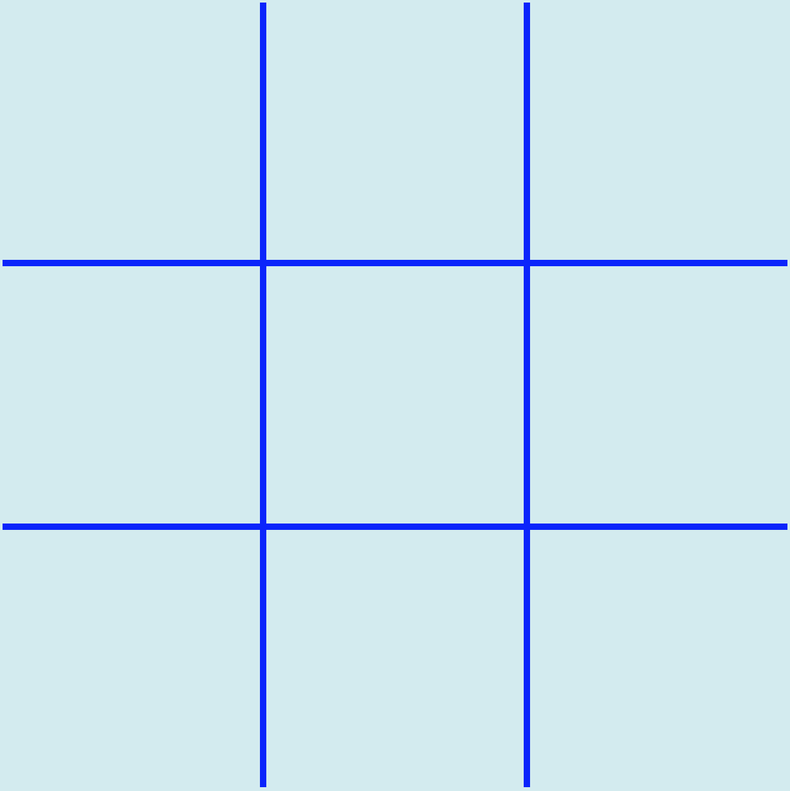
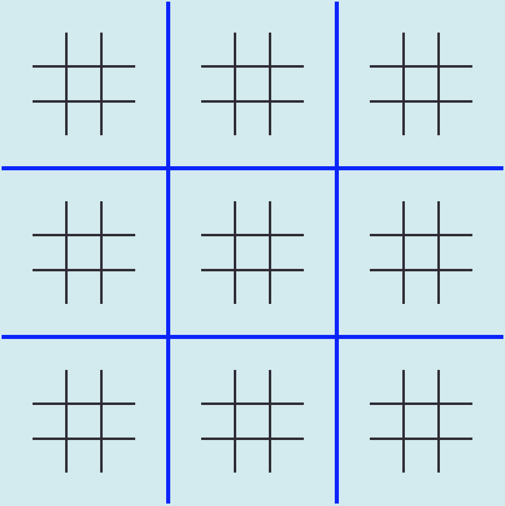
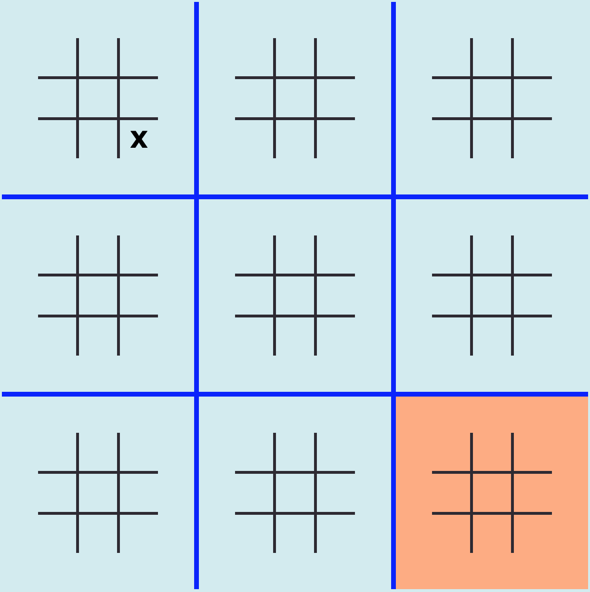
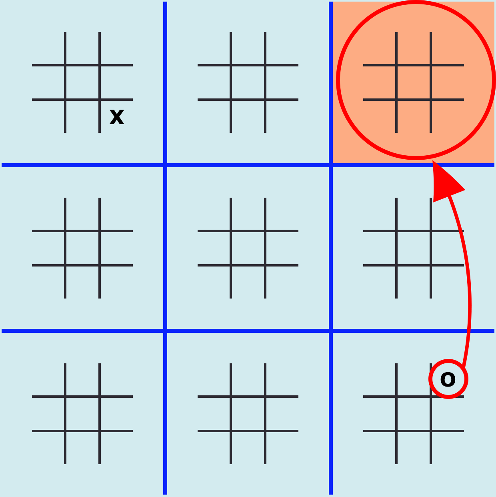
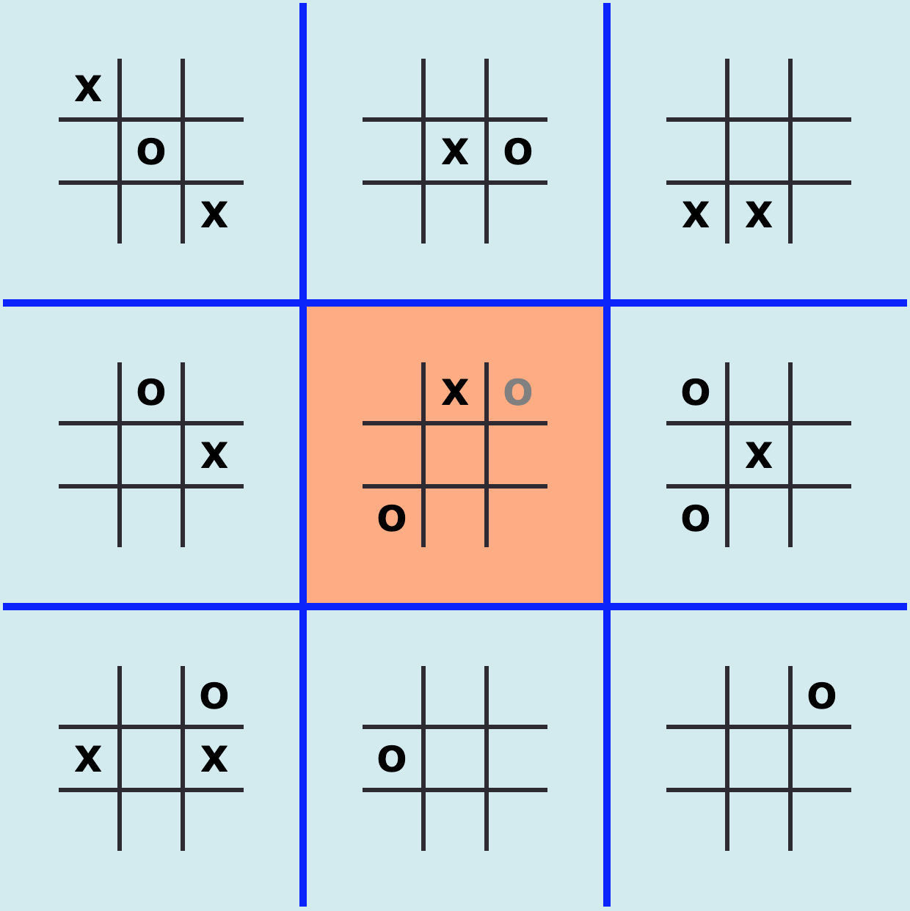
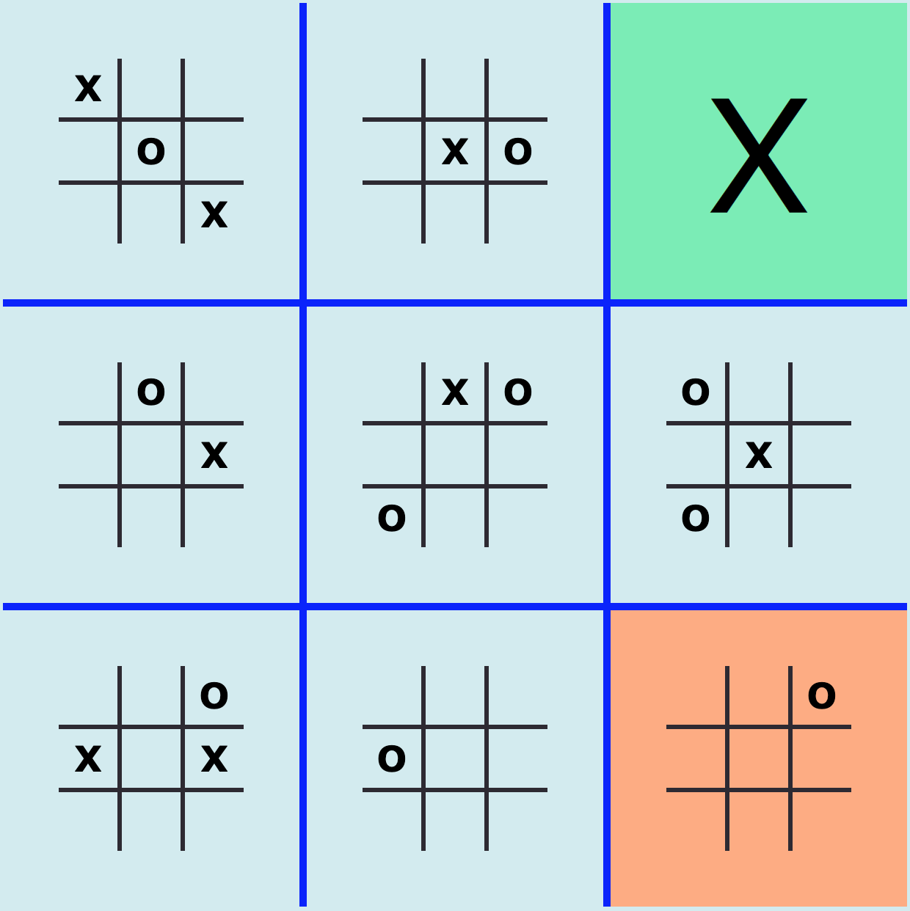
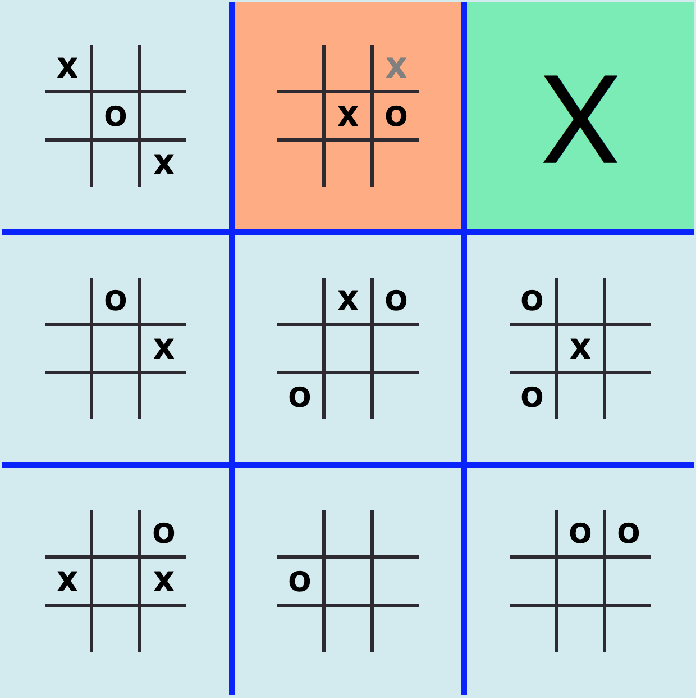
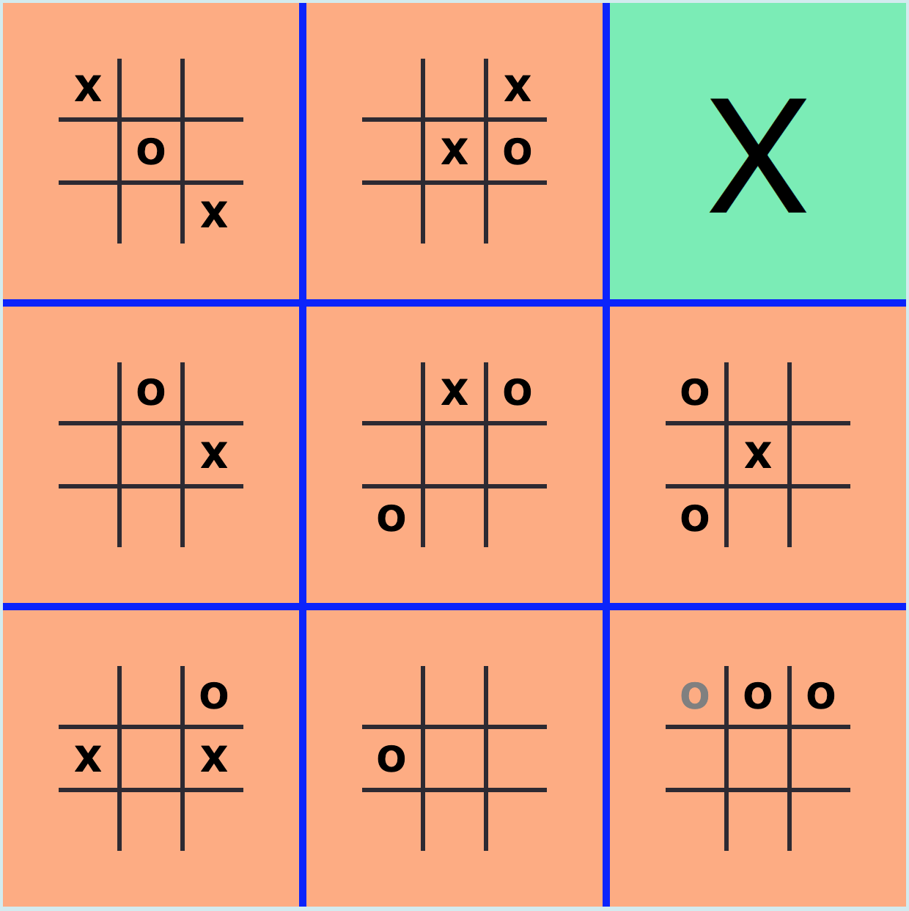
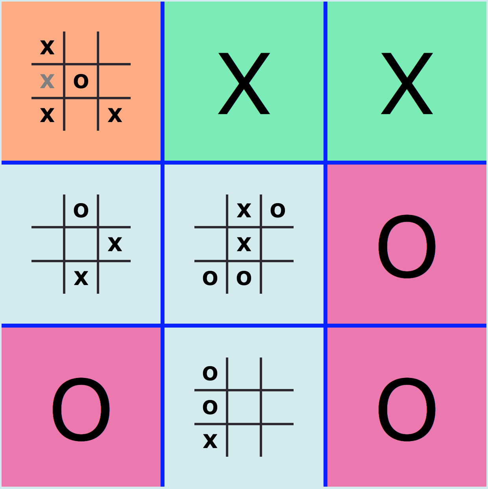
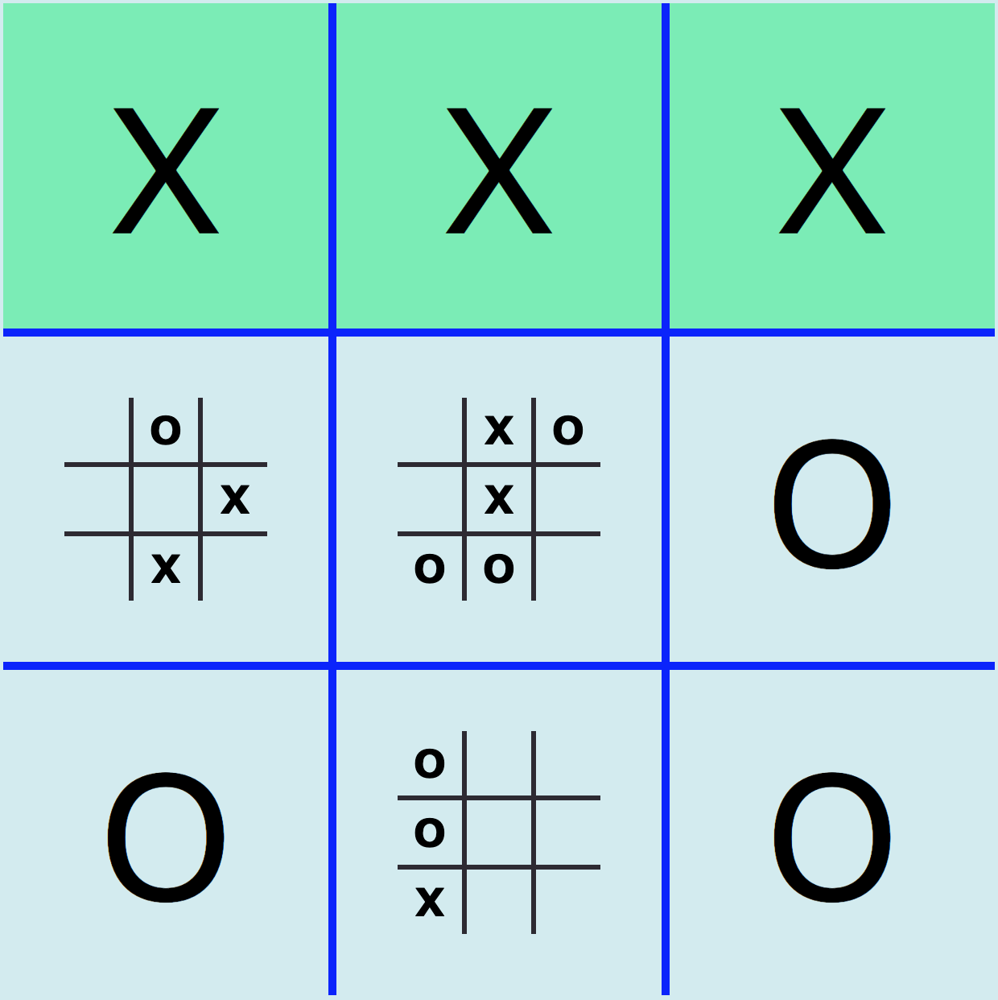

Everyone is familiar with this classic 9-square grid tic-tac-toe.
In Ultimate Tic Tac Toe, you are going to be plaing 10 games at the same time.

In Ultimate Tic Tac Toe, you are going to be plaing 10 games at the same time.
As you can see there are 9 smaller grids within each of those large squares in the blue board.
To win the game, you need to get three larger squares in a row.
To win a large square, you have to get three small squares in a row.

To win the game, you need to get three larger squares in a row.
To win a large square, you have to get three small squares in a row.
Here’s how it works. Say X goes first
For the first move they can go anywhere on the board they would like.

For the first move they can go anywhere on the board they would like.
Now, just like in normal tic-tac-toe, O goes next. But O can’t just go anywhere.
X’s move determines which of the smaller grids O can play on.
Since X went in the bottom right corner within the small grid, O must go in the bottom right corner of the large grid
X’s move determines which of the smaller grids O can play on.
Since X went in the bottom right corner within the small grid, O must go in the bottom right corner of the large grid

Now O can go anywhere in this small grid indicated by the orange square.
Remember, O gets to decide where X will be allowed to play next

A few moves later, the game might look like this

Notice whats about to happened in the far right top square

X got three in a row!
That means X wins the top right small grid, thus claiming that square in the large grid

That means X wins the top right small grid, thus claiming that square in the large grid
Notice how X is about to send O to the top right large square, but it has already been claimed

O got sent to a grid that has already been won, they get to go wherever they want!
This is a huge advantage so try to avoid sending your opponent large squares that have already been claimed

This is a huge advantage so try to avoid sending your opponent large squares that have already been claimed
Notice how X is about to claim the top left large square

X has won the game by getting three large squares in a row
